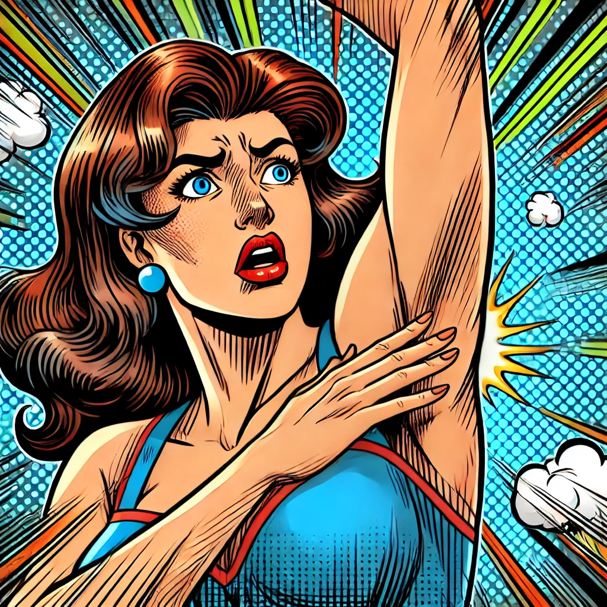

Bau Ketek dan Social Engineering
Isu tentang Erina Gudono, menantu Presiden Joko Widodo, yang diisukan “bau ketek” mungkin tampak sepele dan menggelikan. Namun, di balik isu yang tampaknya remeh ini, terdapat penggunaan teknik social engineering yang lebih mendalam. Dalam konteks ini, social engineering bukan sekadar cara untuk meretas sistem komputer atau mendapatkan informasi rahasia, melainkan alat yang kuat untuk mempengaruhi opini publik, menciptakan persepsi yang diinginkan, dan mengendalikan narasi di ruang publik.

Strategi Membalas Isu dengan Efektif
Berikut adalah beberapa strategi social engineering yang dapat diterapkan untuk meredam dan membalikkan dampak dari isu ini:
Counter-Narrative with Humor and Relatability (Kontra-Naratif dengan Humor dan Keakraban)
Menggunakan self-deprecating humor (humor merendahkan diri sendiri) dapat mengubah narasi dari negatif menjadi lebih simpatik. Erina Gudono dapat secara publik membuat lelucon ringan mengenai isu “bau ketek,” baik di media sosial maupun dalam penampilan publik. Ini menunjukkan self-confidence (kepercayaan diri) dan resilience (ketahanan) terhadap serangan tersebut, yang dapat meningkatkan likeability (ketertarikan) dan membuatnya lebih relatable bagi audiens. Selain itu, engaging with the audience (berinteraksi dengan audiens) secara langsung di media sosial, merespons komentar atau meme dengan sikap santai dan terbuka, dapat mengundang simpati dari publik yang merasa bahwa isu ini berlebihan dan tidak perlu diperbesar.
Information Saturation with Neutral or Diversionary Content (Saturasi Informasi dengan Konten Netral atau Pengalihan)
Daripada berusaha memulihkan reputasi dengan menonjolkan sisi positif yang mungkin sudah dianggap negatif, lebih baik menggunakan strategi neutral content flooding (membanjiri dengan konten netral). Ini melibatkan pembuatan dan penyebaran konten yang tidak terkait langsung dengan isu, seperti topik-topik umum atau informasi yang menarik tetapi netral. Selain itu, diversionary tactics (taktik pengalihan) juga bisa diterapkan dengan menciptakan narasi baru yang lebih menarik perhatian publik daripada isu “bau ketek”. Misalnya, dengan membahas topik-topik yang sedang tren atau meluncurkan proyek baru yang dapat mengalihkan fokus publik.
Community Building and Mobilization for Empathy (Membangun Komunitas dan Mobilisasi untuk Empati)
Menggunakan pendekatan community building (pembangunan komunitas) untuk menciptakan jaringan dukungan yang kuat adalah strategi penting. Ini dapat melibatkan ajakan kepada komunitas pendukung untuk mempromosikan pentingnya empati dan saling menghormati di media sosial, mengalihkan fokus dari isu negatif ke dampak sosial dari penyebaran rumor. Selain itu, empathy campaigns (kampanye empati) bisa digalakkan untuk melawan budaya shaming atau fitnah, seperti kampanye tagar yang mendukung perilaku positif dan melawan tindakan bullying.
Psychological Reframing (Pembingkaian Ulang Psikologis)
Mengubah cara pandang publik terhadap isu ini dengan teknik psychological reframing dapat efektif. Ini bisa dilakukan dengan shifting focus from the person to the issue (mengalihkan fokus dari individu ke isu yang lebih besar), misalnya dengan mengubah percakapan dari serangan pribadi terhadap Erina Gudono menjadi diskusi tentang bahaya rumor dan fitnah bagi masyarakat. Selain itu, highlighting the absurdity of the rumor (menyoroti ketidakmasukakalan rumor) juga bisa menjadi cara untuk mengurangi kepercayaan publik terhadap informasi yang tidak berdasar tersebut.
Corrective Action and Fact-Checking (Tindakan Korektif dan Pemeriksaan Fakta)
Melakukan corrective action (tindakan korektif) untuk meluruskan informasi yang salah adalah langkah penting. Ini bisa dilakukan dengan utilizing fact-checking platforms (memanfaatkan platform pemeriksa fakta) yang berfokus pada verifikasi informasi yang beredar, bekerja sama dengan media atau lembaga terpercaya untuk membantah rumor tersebut. Selain itu, issuing public statements (mengeluarkan pernyataan publik) yang tegas dan jelas, disertai dengan bukti konkret, dapat membantu memperkuat kredibilitas dan kepercayaan publik.
Leverage Emotional Appeals (Memanfaatkan Pendekatan Emosional)
Menggunakan emotional appeals (pendekatan emosional) untuk menghubungkan dengan audiens pada tingkat yang lebih dalam dapat sangat efektif. Membagikan personal stories and vulnerability (cerita pribadi dan kerentanan) yang menunjukkan bagaimana isu ini mempengaruhi secara pribadi dan profesional dapat membangun empati yang lebih kuat dengan audiens. Juga, highlighting the harm of baseless rumors (menyoroti kerugian dari rumor yang tidak berdasar) dapat membuat publik lebih sadar akan dampak negatif dari penyebaran informasi palsu, tidak hanya pada individu yang menjadi target, tetapi juga pada tatanan sosial secara keseluruhan.
Dalam menghadapi isu seperti “bau ketek” yang ditujukan kepada Erina Gudono, pendekatan social engineering yang lebih kreatif dan adaptif sangat diperlukan. Menggunakan humor, mengalihkan perhatian, membangun empati, dan meluruskan fakta bisa menjadi langkah efektif untuk meredam isu negatif dan membangun kembali citra yang positif
Social Engineering dalam Konteks Disinformasi
Social engineering dalam konteks ini berfokus pada manipulasi psikologis dan emosional publik. Teknik ini memanfaatkan sifat manusia yang mudah terpengaruh oleh informasi yang menarik perhatian atau memicu emosi tertentu, seperti kemarahan, kecemasan, atau bahkan tawa. Teknik ini bekerja pada beberapa tingkatan:
Psychological Targeting (Penargetan Psikologis): Salah satu aspek paling kuat dari social engineering adalah penargetan psikologis. Dalam kasus isu “bau ketek,” pelaku mungkin menargetkan emosi tertentu, seperti rasa jijik atau tawa, untuk mempengaruhi persepsi publik terhadap Erina Gudono. Emosi yang kuat seperti ini dapat mengaburkan penilaian rasional dan menyebabkan orang lebih mudah menerima atau mempercayai informasi yang tidak berdasar.
Cognitive Bias Exploitation (Eksploitasi Bias Kognitif): Teknik ini memanfaatkan bias kognitif manusia, seperti confirmation bias (kecenderungan untuk mencari, menafsirkan, atau mengingat informasi yang mengonfirmasi keyakinan yang ada) dan availability heuristic (kecenderungan untuk lebih mempercayai informasi yang mudah diingat atau sering dilihat). Dengan menyebarkan rumor “bau ketek,” pelaku bisa mengeksploitasi bias ini untuk membuat orang lebih mudah menerima informasi negatif tentang target, bahkan tanpa bukti konkret.
Information Saturation (Saturasi Informasi): Dengan membanjiri media sosial dan platform berita dengan isu tertentu, pelaku bisa menciptakan kesan bahwa informasi tersebut adalah hal yang signifikan atau benar. Saturasi informasi ini bisa mengaburkan kebenaran dan membuat publik kesulitan untuk membedakan mana informasi yang valid dan mana yang tidak.
Emotional Contagion (Penyebaran Emosi): Emosi dapat menyebar dengan cepat melalui jaringan sosial, dan teknik social engineering sering kali memanfaatkan fenomena ini. Isu yang memicu reaksi emosional kuat, seperti tawa atau rasa jijik, dapat dengan cepat menyebar dari orang ke orang, memperbesar dampaknya dan mempercepat penyebarannya.